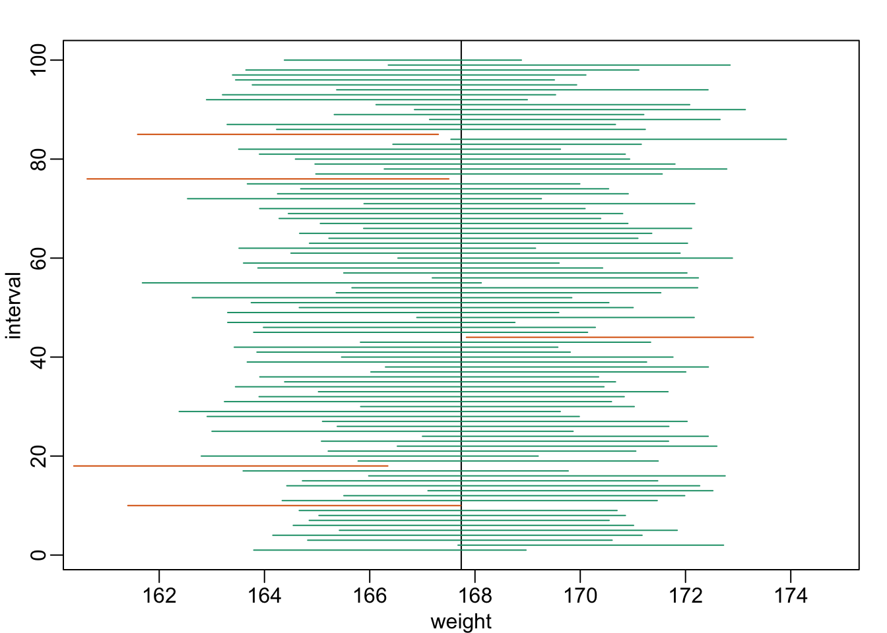
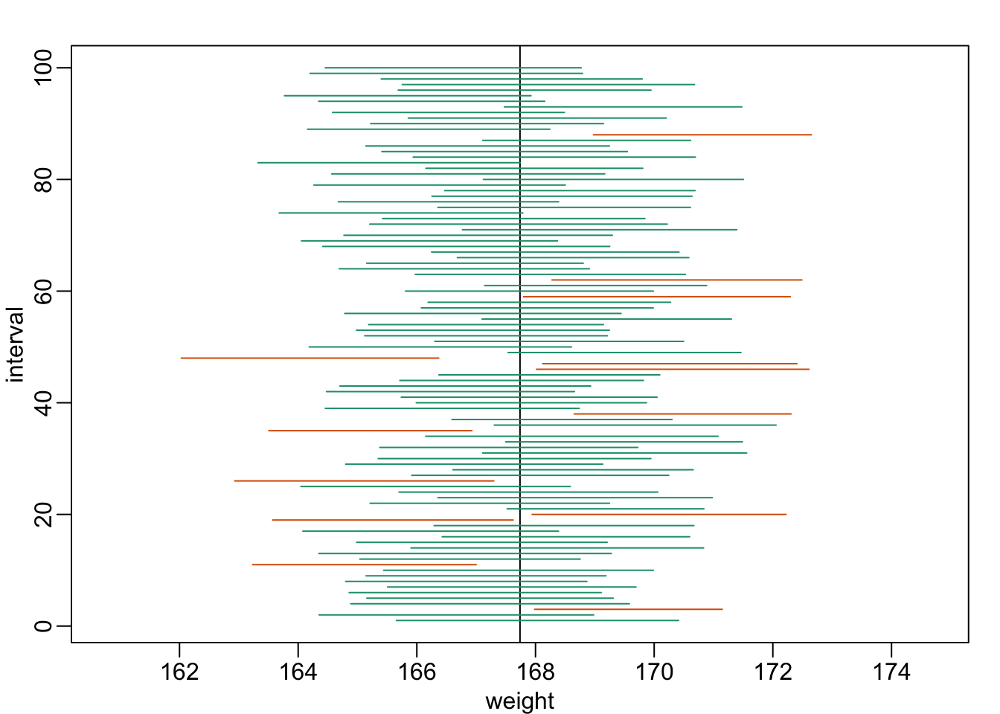

Chapter 3 Estimation
3.1 Confidence Interval
In this section, we use data collected from class as a demo dataset.
## Warning: Missing column names filled in: 'X11' [11]##
## ── Column specification ────────────────────────────────────────────────────────
## cols(
## 時間戳記 = col_character(),
## 性別 = col_character(),
## 戶籍縣市 = col_character(),
## 姓氏筆畫 = col_character(),
## 是否有近視 = col_character(),
## 慣用手 = col_character(),
## 身高 = col_character(),
## 體重 = col_double(),
## 入學管道 = col_character(),
## 學測總分 = col_character(),
## X11 = col_character()
## )| 身高 | 體重 | 是否有近視 |
|---|---|---|
| 163 | 50 | 是 |
| 182 | 65 | 是 |
| 170 | 57 | 是 |
| 171 | 70 | 否 |
| 177 | 72 | 是 |
| 174 | 78 | 是 |
Clean the data
classData$身高<-gsub("cm","",classData$身高)
classData$體重<-gsub("cm","",classData$體重)
classData$身高<-as.numeric(classData$身高)
classData$體重<-as.numeric(classData$體重)Calculate mean and sd
## [1] 167.7387## [1] 8.86137## [1] 59.91415## [1] 10.658263.1.1 z distribution
From the population data, we want to estimate the mean of the height using sampling, with n=30.
## [1] 157.0 172.0 160.0 175.0 158.0 162.0 173.0 155.0 171.0 175.0 168.0 170.0
## [13] 176.0 160.0 176.0 156.0 175.0 170.0 172.0 168.0 168.0 171.0 175.0 162.0
## [25] 170.0 172.0 158.0 166.5 171.0 155.0From this sampling result, we can have point estimation of the mean
## [1] 167.25Because n>30, the distribution of sample mean is normal distribution. We can estimate 95% confidence interval using z distribution
## [1] 164.079## [1] 170.421If we perform the sampling 100 times
## [,1] [,2] [,3] [,4] [,5] [,6] [,7] [,8] [,9] [,10] [,11] [,12] [,13]
## [1,] 154.0 165 185.0 157 170 163.0 178 174.0 178.0 155.0 177 160.0 170
## [2,] 170.0 170 160.0 155 170 170.0 150 176.0 155.0 182.0 159 178.0 182
## [3,] 153.0 172 163.0 159 170 172.0 157 163.0 177.0 173.0 173 173.0 165
## [4,] 176.0 157 157.0 181 148 161.0 157 170.0 168.0 182.0 158 188.0 175
## [5,] 170.4 188 160.0 172 177 148.0 173 170.4 161.0 168.0 170 158.0 168
## [6,] 175.0 170 166.0 150 175 170.0 171 155.0 172.0 150.0 167 165.0 157
## [7,] 170.0 178 168.0 163 172 159.0 160 171.0 178.0 173.0 154 175.0 160
## [8,] 157.0 163 175.0 175 181 175.0 156 175.0 170.0 158.0 181 171.0 178
## [9,] 178.0 181 172.0 172 154 148.0 175 171.0 170.4 165.0 157 165.0 181
## [10,] 173.0 181 175.0 172 184 163.0 171 170.0 185.0 182.0 181 162.0 178
## [11,] 170.0 174 170.0 173 163 168.0 171 170.0 162.0 165.0 174 185.0 181
## [12,] 178.0 168 158.0 171 185 150.0 157 175.0 157.0 157.0 158 162.0 160
## [13,] 171.0 177 173.0 165 160 176.0 175 178.0 174.0 170.0 148 175.0 158
## [14,] 175.0 177 172.0 176 181 158.0 170 171.0 170.0 168.0 178 171.0 173
## [15,] 171.0 154 170.0 175 178 170.4 168 157.0 167.0 162.0 150 168.0 160
## [16,] 170.0 157 165.0 170 181 175.0 174 163.0 174.0 167.0 157 159.0 178
## [17,] 175.0 171 161.0 162 171 181.0 171 174.0 177.0 163.0 175 165.0 153
## [18,] 165.0 173 160.0 177 157 163.0 175 181.0 163.0 170.4 172 159.0 173
## [19,] 178.0 163 178.0 163 168 160.0 168 157.0 170.4 170.4 155 172.0 163
## [20,] 163.0 171 173.0 181 177 185.0 163 172.0 175.0 165.0 154 163.0 171
## [21,] 172.0 168 170.4 150 159 185.0 170 163.0 157.0 166.0 165 181.0 153
## [22,] 160.0 160 148.0 176 159 171.0 176 166.0 171.0 178.0 160 157.0 159
## [23,] 168.0 168 178.0 170 158 178.0 163 165.0 159.0 168.0 172 161.0 173
## [24,] 170.0 174 177.0 172 172 168.0 150 156.0 171.0 158.0 163 154.0 170
## [25,] 157.0 178 170.0 168 158 165.0 156 159.0 157.0 176.0 148 178.0 188
## [26,] 168.0 178 163.0 158 174 170.0 174 155.0 170.0 176.0 170 171.0 160
## [27,] 165.0 176 148.0 172 178 175.0 174 178.0 163.0 155.0 171 157.0 174
## [28,] 155.0 168 163.0 178 173 175.0 171 160.0 165.0 163.0 170 165.0 178
## [29,] 176.0 163 178.0 154 162 155.0 173 159.0 172.0 158.0 181 159.0 153
## [30,] 168.0 155 148.0 157 176 167.0 175 171.0 163.0 163.0 155 170.4 165
## [,14] [,15] [,16] [,17] [,18] [,19] [,20] [,21] [,22] [,23] [,24] [,25]
## [1,] 176.0 175.0 154 163.0 168 181.0 175.0 159.0 163 166 171.0 170.0
## [2,] 170.0 170.0 188 157.0 188 163.0 163.0 159.0 171 165 170.4 178.0
## [3,] 155.0 172.0 178 148.0 159 159.0 170.0 166.5 181 171 163.0 172.0
## [4,] 160.0 176.0 157 166.5 182 166.0 176.0 163.0 157 148 168.0 163.0
## [5,] 177.0 181.0 165 163.0 178 185.0 156.0 170.0 163 163 164.0 177.0
## [6,] 168.0 175.0 148 185.0 157 155.0 155.0 168.0 161 175 168.0 171.0
## [7,] 163.0 170.0 157 182.0 178 159.0 173.0 157.0 170 174 171.0 176.0
## [8,] 170.4 181.0 188 168.0 171 166.5 170.0 161.0 153 181 170.0 178.0
## [9,] 171.0 184.0 172 168.0 176 168.0 163.0 156.0 172 184 172.0 170.0
## [10,] 162.0 171.0 181 170.0 173 170.0 170.4 174.0 173 170 172.0 178.0
## [11,] 150.0 153.0 165 156.0 175 185.0 161.0 174.0 154 168 156.0 172.0
## [12,] 175.0 158.0 168 170.0 167 167.0 172.0 155.0 163 177 181.0 178.0
## [13,] 154.0 185.0 157 163.0 165 168.0 158.0 158.0 155 163 170.4 157.0
## [14,] 185.0 174.0 165 168.0 158 163.0 158.0 185.0 174 165 153.0 178.0
## [15,] 171.0 158.0 154 176.0 173 178.0 154.0 182.0 170 155 172.0 170.4
## [16,] 163.0 172.0 177 178.0 163 178.0 160.0 164.0 171 160 174.0 176.0
## [17,] 176.0 170.4 178 165.0 171 177.0 165.0 174.0 178 154 174.0 150.0
## [18,] 170.0 181.0 178 171.0 171 172.0 170.0 175.0 171 160 167.0 155.0
## [19,] 171.0 177.0 178 172.0 157 181.0 153.0 175.0 177 167 178.0 171.0
## [20,] 170.0 171.0 170 174.0 175 160.0 170.0 175.0 161 173 158.0 166.0
## [21,] 161.0 168.0 170 185.0 155 166.0 171.0 159.0 171 157 170.0 168.0
## [22,] 177.0 165.0 155 174.0 163 171.0 163.0 166.5 158 178 175.0 150.0
## [23,] 175.0 163.0 160 153.0 168 157.0 171.0 178.0 171 157 184.0 162.0
## [24,] 173.0 174.0 167 176.0 155 148.0 165.0 175.0 171 173 159.0 176.0
## [25,] 163.0 168.0 178 173.0 181 168.0 171.0 163.0 175 170 171.0 154.0
## [26,] 178.0 171.0 172 168.0 160 150.0 165.0 170.4 153 160 171.0 175.0
## [27,] 171.0 172.0 167 175.0 173 178.0 157.0 170.0 174 166 150.0 165.0
## [28,] 174.0 174.0 163 163.0 177 160.0 161.0 168.0 170 170 165.0 163.0
## [29,] 170.0 178.0 156 164.0 170 173.0 163.0 176.0 160 182 184.0 163.0
## [30,] 174.0 150.0 165 160.0 160 171.0 178.0 168.0 148 185 158.0 160.0
## [,26] [,27] [,28] [,29] [,30] [,31] [,32] [,33] [,34] [,35] [,36] [,37]
## [1,] 171 181.0 170 173 170.4 158 178 155 178 175.0 154 178
## [2,] 178 173.0 172 162 154.0 175 181 157 168 170.0 163 170
## [3,] 178 170.0 165 160 155.0 158 155 171 163 172.0 184 160
## [4,] 182 155.0 159 159 175.0 175 158 168 181 170.4 158 160
## [5,] 172 168.0 153 165 163.0 172 181 158 175 163.0 148 181
## [6,] 163 178.0 148 170 157.0 154 178 188 176 174.0 176 170
## [7,] 159 165.0 175 178 165.0 173 163 168 177 188.0 177 165
## [8,] 168 170.0 170 166 185.0 172 163 153 153 163.0 171 175
## [9,] 159 178.0 170 175 168.0 163 168 175 164 171.0 153 163
## [10,] 163 158.0 171 160 159.0 171 175 175 157 157.0 170 171
## [11,] 176 168.0 160 165 148.0 185 171 150 171 157.0 158 159
## [12,] 188 148.0 173 185 170.0 160 166 157 177 154.0 163 178
## [13,] 170 155.0 185 171 172.0 165 150 170 162 163.0 150 163
## [14,] 173 185.0 159 174 163.0 178 181 168 163 174.0 173 177
## [15,] 168 175.0 176 168 175.0 175 161 175 157 176.0 160 172
## [16,] 153 168.0 162 172 181.0 163 159 159 168 154.0 158 175
## [17,] 177 161.0 178 177 161.0 168 178 172 181 167.0 168 178
## [18,] 168 182.0 171 172 164.0 162 177 168 174 178.0 172 155
## [19,] 172 174.0 157 168 170.0 171 173 175 165 170.0 175 176
## [20,] 174 163.0 174 155 168.0 171 163 155 170 181.0 148 178
## [21,] 170 163.0 157 182 168.0 150 170 172 174 182.0 181 157
## [22,] 177 176.0 172 155 182.0 175 155 177 172 163.0 185 178
## [23,] 174 166.5 172 177 170.0 161 171 181 155 166.5 173 153
## [24,] 148 170.0 185 170 184.0 181 170 175 163 160.0 154 155
## [25,] 174 175.0 150 163 185.0 154 157 163 157 153.0 171 160
## [26,] 155 168.0 175 163 159.0 175 156 175 163 170.0 158 163
## [27,] 181 165.0 170 170 170.0 154 181 150 170 163.0 158 160
## [28,] 168 168.0 175 173 185.0 164 174 168 172 155.0 181 160
## [29,] 171 170.4 158 170 157.0 181 170 165 173 160.0 156 170
## [30,] 170 163.0 163 153 175.0 155 168 150 155 178.0 170 182
## [,38] [,39] [,40] [,41] [,42] [,43] [,44] [,45] [,46] [,47] [,48] [,49]
## [1,] 178.0 155.0 148.0 175.0 171.0 175 157 157 177 174 155 155
## [2,] 159.0 155.0 173.0 165.0 170.0 160 165 175 153 173 181 163
## [3,] 173.0 157.0 163.0 148.0 178.0 171 185 175 175 163 163 175
## [4,] 163.0 168.0 157.0 172.0 171.0 158 157 170 184 171 155 175
## [5,] 171.0 166.5 170.0 155.0 170.4 161 164 178 157 168 168 163
## [6,] 170.0 184.0 171.0 181.0 161.0 173 154 159 177 185 173 163
## [7,] 165.0 168.0 154.0 174.0 163.0 163 153 171 163 150 166 157
## [8,] 165.0 175.0 170.0 174.0 177.0 160 173 171 170 165 160 165
## [9,] 170.0 171.0 170.4 168.0 172.0 154 163 160 172 178 150 158
## [10,] 172.0 181.0 188.0 178.0 165.0 178 155 178 153 173 170 178
## [11,] 178.0 157.0 170.0 166.5 176.0 170 165 168 153 170 157 170
## [12,] 172.0 170.0 175.0 163.0 182.0 171 185 170 178 154 175 171
## [13,] 160.0 165.0 148.0 148.0 163.0 178 178 174 168 163 159 185
## [14,] 170.4 157.0 172.0 178.0 173.0 172 178 158 172 174 157 177
## [15,] 178.0 177.0 178.0 161.0 168.0 181 163 175 163 178 178 177
## [16,] 154.0 177.0 172.0 155.0 160.0 164 170 150 167 170 176 172
## [17,] 159.0 150.0 178.0 150.0 185.0 188 185 170 157 157 168 181
## [18,] 176.0 175.0 163.0 177.0 171.0 175 160 165 168 168 155 170
## [19,] 177.0 160.0 170.0 175.0 160.0 170 178 170 170 170 173 163
## [20,] 153.0 178.0 173.0 155.0 172.0 157 155 157 165 178 165 172
## [21,] 171.0 185.0 157.0 164.0 160.0 163 163 163 174 163 178 148
## [22,] 159.0 163.0 165.0 171.0 172.0 178 172 178 170 153 155 163
## [23,] 155.0 154.0 160.0 168.0 172.0 172 157 170 170 158 165 167
## [24,] 172.0 171.0 178.0 171.0 148.0 165 155 170 153 171 181 170
## [25,] 157.0 168.0 178.0 155.0 163.0 165 174 182 174 163 154 175
## [26,] 150.0 175.0 168.0 165.0 181.0 178 178 154 171 170 175 159
## [27,] 163.0 177.0 177.0 171.0 163.0 185 159 174 172 170 173 160
## [28,] 170.0 164.0 157.0 163.0 177.0 160 188 154 170 162 165 163
## [29,] 156.0 173.0 178.0 177.0 181.0 158 181 163 160 170 171 166
## [30,] 175.0 171.0 157.0 170.0 174.0 174 154 172 174 165 160 171
## [,50] [,51] [,52] [,53] [,54] [,55] [,56] [,57] [,58] [,59] [,60] [,61]
## [1,] 148 174.0 158 188.0 165.0 170.0 163 175 162 163.0 161 159.0
## [2,] 165 171.0 177 172.0 160.0 163.0 175 165 168 162.0 178 163.0
## [3,] 175 166.5 159 170.4 165.0 173.0 163 167 166 168.0 176 167.0
## [4,] 163 178.0 170 171.0 159.0 161.0 159 162 156 153.0 176 175.0
## [5,] 155 160.0 171 181.0 171.0 155.0 171 159 181 160.0 173 178.0
## [6,] 159 160.0 171 155.0 171.0 177.0 165 157 157 170.4 178 173.0
## [7,] 176 178.0 170 165.0 163.0 148.0 174 162 160 176.0 153 150.0
## [8,] 160 170.4 164 153.0 171.0 177.0 172 172 148 163.0 153 159.0
## [9,] 155 184.0 178 176.0 154.0 175.0 171 178 163 170.0 175 165.0
## [10,] 170 184.0 171 178.0 175.0 172.0 173 148 174 150.0 172 165.0
## [11,] 168 175.0 170 161.0 170.0 163.0 174 175 173 154.0 150 175.0
## [12,] 171 175.0 158 164.0 154.0 171.0 170 160 174 178.0 174 154.0
## [13,] 171 170.0 163 163.0 178.0 159.0 178 176 178 165.0 160 181.0
## [14,] 170 174.0 154 177.0 168.0 175.0 150 163 176 175.0 160 181.0
## [15,] 188 163.0 176 163.0 170.0 181.0 175 163 155 185.0 157 177.0
## [16,] 181 162.0 160 177.0 155.0 170.0 170 172 177 172.0 165 170.0
## [17,] 175 159.0 172 170.0 168.0 178.0 185 171 188 175.0 175 181.0
## [18,] 160 171.0 170 170.0 163.0 170.0 163 160 176 170.0 157 172.0
## [19,] 170 168.0 157 157.0 181.0 155.0 170 177 165 175.0 168 165.0
## [20,] 168 185.0 163 170.4 166.5 173.0 170 172 159 170.4 156 181.0
## [21,] 173 170.0 157 158.0 150.0 173.0 176 171 159 181.0 148 171.0
## [22,] 175 171.0 157 157.0 175.0 162.0 148 182 163 177.0 160 170.4
## [23,] 165 175.0 155 176.0 158.0 174.0 165 170 185 178.0 178 165.0
## [24,] 165 155.0 174 171.0 160.0 170.0 157 178 170 170.0 178 171.0
## [25,] 170 172.0 173 173.0 171.0 164.0 173 170 176 173.0 172 185.0
## [26,] 173 155.0 168 165.0 172.0 148.0 163 166 170 168.0 178 171.0
## [27,] 174 163.0 165 177.0 176.0 168.0 160 171 158 167.0 150 165.0
## [28,] 160 163.0 165 155.0 150.0 178.0 163 171 160 163.0 163 176.0
## [29,] 171 170.0 163 173.0 163.0 178.0 158 157 168 178.0 150 160.0
## [30,] 181 175.0 175 168.0 148.0 166.5 171 168 170 158.0 170 175.0
## [,62] [,63] [,64] [,65] [,66] [,67] [,68] [,69] [,70] [,71] [,72] [,73]
## [1,] 181.0 181 175.0 171.0 172 177.0 170 185 153 165 178 175.0
## [2,] 163.0 170 160.0 168.0 171 168.0 177 157 167 174 172 174.0
## [3,] 157.0 157 150.0 175.0 185 172.0 168 168 178 159 178 174.0
## [4,] 170.0 172 170.4 168.0 168 174.0 171 178 150 178 155 171.0
## [5,] 159.0 163 165.0 163.0 181 178.0 148 171 176 170 154 177.0
## [6,] 163.0 158 171.0 174.0 171 155.0 153 153 170 165 160 178.0
## [7,] 166.0 165 168.0 163.0 154 171.0 174 162 163 158 170 170.4
## [8,] 165.0 148 166.0 166.5 148 165.0 163 150 155 153 176 164.0
## [9,] 165.0 153 178.0 154.0 178 162.0 165 159 185 173 165 171.0
## [10,] 175.0 163 181.0 175.0 175 170.0 155 175 176 170 182 182.0
## [11,] 160.0 163 188.0 174.0 158 153.0 161 185 160 168 148 168.0
## [12,] 165.0 170 165.0 175.0 172 174.0 172 182 181 156 158 157.0
## [13,] 166.0 171 175.0 158.0 173 153.0 175 185 170 177 157 154.0
## [14,] 165.0 160 167.0 172.0 168 158.0 177 168 156 178 171 175.0
## [15,] 170.0 170 178.0 174.0 165 168.0 182 182 166 175 165 175.0
## [16,] 171.0 171 168.0 163.0 170 157.0 175 178 188 168 150 153.0
## [17,] 171.0 163 178.0 167.0 170 177.0 171 165 175 170 184 163.0
## [18,] 188.0 173 160.0 181.0 159 166.5 165 159 172 166 168 167.0
## [19,] 171.0 148 173.0 170.0 185 171.0 172 157 176 162 175 153.0
## [20,] 165.0 178 158.0 175.0 156 182.0 157 163 165 165 170 148.0
## [21,] 176.0 157 163.0 178.0 177 160.0 168 177 150 157 182 173.0
## [22,] 170.4 171 178.0 154.0 173 171.0 168 174 174 150 174 155.0
## [23,] 185.0 163 165.0 181.0 170 171.0 175 171 168 163 168 156.0
## [24,] 155.0 178 170.0 148.0 182 168.0 160 170 155 171 176 173.0
## [25,] 158.0 172 163.0 178.0 148 160.0 170 163 174 175 170 178.0
## [26,] 181.0 165 155.0 159.0 178 175.0 168 172 177 154 163 170.0
## [27,] 173.0 157 178.0 170.0 178 153.0 168 148 160 170 185 161.0
## [28,] 184.0 175 168.0 161.0 163 170.0 155 175 185 156 185 161.0
## [29,] 185.0 177 170.0 160.0 178 171.0 175 182 175 171 174 174.0
## [30,] 153.0 174 172.0 155.0 175 163.0 181 178 178 171 177 171.0
## [,74] [,75] [,76] [,77] [,78] [,79] [,80] [,81] [,82] [,83] [,84] [,85]
## [1,] 153.0 150.0 177 172 166.5 170.4 168.0 171.0 174 170.0 157 173
## [2,] 171.0 168.0 168 174 163.0 150.0 176.0 171.0 170 175.0 163 159
## [3,] 176.0 164.0 174 156 171.0 171.0 166.0 175.0 163 171.0 168 184
## [4,] 163.0 163.0 163 158 161.0 157.0 170.4 188.0 168 159.0 172 155
## [5,] 170.0 155.0 177 170 165.0 167.0 156.0 163.0 163 157.0 164 178
## [6,] 170.0 178.0 171 178 163.0 168.0 148.0 182.0 185 188.0 175 174
## [7,] 176.0 178.0 178 171 163.0 175.0 175.0 175.0 155 170.4 148 163
## [8,] 168.0 153.0 184 178 177.0 178.0 156.0 175.0 170 160.0 159 163
## [9,] 161.0 174.0 148 165 156.0 170.0 170.4 165.0 175 173.0 155 172
## [10,] 168.0 173.0 175 175 173.0 153.0 165.0 157.0 174 168.0 168 154
## [11,] 166.0 153.0 164 164 159.0 163.0 159.0 163.0 159 153.0 178 154
## [12,] 171.0 154.0 172 155 160.0 175.0 175.0 170.0 172 165.0 153 175
## [13,] 171.0 172.0 170 185 155.0 168.0 155.0 168.0 171 159.0 155 175
## [14,] 171.0 172.0 154 182 177.0 188.0 168.0 175.0 163 170.0 171 154
## [15,] 171.0 177.0 175 148 168.0 175.0 161.0 161.0 159 171.0 161 157
## [16,] 163.0 181.0 176 165 165.0 154.0 153.0 161.0 165 171.0 160 165
## [17,] 170.4 163.0 171 170 172.0 163.0 155.0 170.0 185 155.0 184 162
## [18,] 181.0 170.0 177 160 171.0 178.0 170.0 157.0 168 172.0 155 176
## [19,] 171.0 159.0 159 163 178.0 172.0 173.0 157.0 181 165.0 181 177
## [20,] 177.0 174.0 157 170 178.0 175.0 174.0 173.0 172 153.0 170 157
## [21,] 188.0 153.0 171 165 181.0 170.0 171.0 161.0 170 175.0 171 177
## [22,] 174.0 170.0 153 166 170.4 175.0 155.0 174.0 160 171.0 170 176
## [23,] 170.0 170.4 188 171 177.0 166.5 167.0 165.0 170 148.0 170 171
## [24,] 171.0 167.0 163 167 157.0 177.0 160.0 167.0 158 162.0 166 170
## [25,] 171.0 159.0 170 176 174.0 160.0 167.0 177.0 165 171.0 148 175
## [26,] 171.0 156.0 175 166 170.0 170.0 173.0 176.0 158 163.0 168 188
## [27,] 163.0 178.0 163 175 170.0 175.0 163.0 170.4 181 165.0 182 175
## [28,] 170.0 184.0 171 168 171.0 166.5 171.0 165.0 153 160.0 175 178
## [29,] 172.0 178.0 166 174 163.0 168.0 153.0 181.0 172 185.0 176 160
## [30,] 155.0 178.0 178 163 174.0 170.0 165.0 174.0 167 176.0 168 165
## [,86] [,87] [,88] [,89] [,90] [,91] [,92] [,93] [,94] [,95] [,96] [,97]
## [1,] 163 171.0 171 162 175.0 165.0 163.0 185.0 154.0 148 165 172.0
## [2,] 163 185.0 157 163 155.0 159.0 163.0 173.0 159.0 176 163 163.0
## [3,] 170 163.0 155 184 170.0 150.0 178.0 170.0 181.0 170 178 155.0
## [4,] 175 184.0 177 155 166.5 154.0 170.4 178.0 150.0 163 163 174.0
## [5,] 155 163.0 150 178 157.0 170.0 175.0 178.0 171.0 155 166 155.0
## [6,] 174 160.0 177 154 178.0 185.0 163.0 148.0 176.0 165 174 171.0
## [7,] 178 173.0 155 157 176.0 178.0 185.0 163.0 161.0 154 159 157.0
## [8,] 173 175.0 148 185 178.0 160.0 171.0 150.0 157.0 171 176 168.0
## [9,] 163 181.0 158 163 163.0 188.0 165.0 165.0 159.0 174 171 172.0
## [10,] 163 163.0 176 171 177.0 188.0 172.0 168.0 185.0 161 171 157.0
## [11,] 174 175.0 165 170 171.0 170.0 171.0 171.0 165.0 148 176 162.0
## [12,] 159 157.0 160 148 154.0 163.0 153.0 158.0 154.0 170 170 181.0
## [13,] 171 170.0 176 159 160.0 177.0 170.4 170.4 157.0 172 170 168.0
## [14,] 158 175.0 167 175 181.0 172.0 173.0 176.0 163.0 157 160 150.0
## [15,] 170 170.4 165 174 185.0 150.0 171.0 177.0 173.0 162 175 177.0
## [16,] 170 170.0 163 163 165.0 157.0 170.0 175.0 176.0 154 171 175.0
## [17,] 168 171.0 160 171 163.0 188.0 160.0 171.0 176.0 173 170 188.0
## [18,] 154 159.0 178 170 185.0 174.0 158.0 157.0 170.0 170 177 171.0
## [19,] 163 165.0 157 173 177.0 155.0 157.0 181.0 175.0 171 170 168.0
## [20,] 184 167.0 158 182 154.0 167.0 159.0 170.4 153.0 163 165 171.0
## [21,] 174 171.0 178 159 155.0 159.0 163.0 178.0 173.0 171 170 165.0
## [22,] 175 171.0 153 175 160.0 170.4 174.0 173.0 153.0 188 155 185.0
## [23,] 157 161.0 153 163 170.0 163.0 170.0 176.0 150.0 166 175 166.5
## [24,] 163 173.0 163 165 168.0 160.0 158.0 173.0 175.0 164 163 165.0
## [25,] 160 155.0 170 170 174.0 159.0 165.0 160.0 170.4 170 170 178.0
## [26,] 155 153.0 161 160 176.0 181.0 163.0 170.0 154.0 163 163 172.0
## [27,] 155 178.0 177 174 163.0 177.0 150.0 155.0 172.0 163 163 165.0
## [28,] 181 174.0 148 174 160.0 150.0 158.0 157.0 178.0 155 178 172.0
## [29,] 173 168.0 178 157 168.0 150.0 170.0 172.0 168.0 158 175 173.0
## [30,] 171 167.0 168 172 150.0 155.0 166.5 155.0 170.0 163 163 165.0
## [,98] [,99] [,100]
## [1,] 185.0 172 160
## [2,] 175.0 154 188
## [3,] 163.0 159 175
## [4,] 158.0 171 157
## [5,] 163.0 168 170
## [6,] 171.0 157 160
## [7,] 159.0 163 163
## [8,] 178.0 150 158
## [9,] 171.0 163 172
## [10,] 172.0 159 184
## [11,] 178.0 160 159
## [12,] 172.0 163 168
## [13,] 168.0 170 163
## [14,] 150.0 157 171
## [15,] 167.0 174 174
## [16,] 157.0 176 166
## [17,] 159.0 150 178
## [18,] 160.0 182 172
## [19,] 170.0 165 175
## [20,] 165.0 178 178
## [21,] 172.0 155 175
## [22,] 170.4 157 177
## [23,] 174.0 181 175
## [24,] 158.0 170 167
## [25,] 170.0 164 175
## [26,] 158.0 170 161
## [27,] 178.0 163 176
## [28,] 158.0 173 185
## [29,] 171.0 154 153
## [30,] 165.0 153 172We can have 100 point estimations for the population mean
## [1] 168.3800 169.9333 166.8133 167.4667 169.7000 167.4800 167.4000 167.5133
## [9] 168.3933 166.8933 165.1000 167.5800 168.5667 169.1133 171.2467 167.7000
## [17] 168.4833 168.9000 168.1167 165.2467 168.1467 166.3000 167.9000 168.6600
## [25] 168.0800 170.0000 168.6633 167.5000 168.3667 168.6133 167.3000 168.3667
## [33] 166.4333 167.8000 167.5967 165.5333 168.0667 166.3800 168.2500 167.9467
## [41] 166.4500 169.9800 169.2333 167.4667 167.7000 167.6667 167.5667 166.0333
## [49] 167.7333 168.5000 169.8967 166.1333 168.4933 165.0167 168.2500 167.5000
## [57] 167.9333 167.8333 168.9267 165.4667 170.0133 169.2133 166.2000 169.2133
## [65] 167.6833 170.0333 167.1167 167.9667 169.7333 169.2667 166.2667 169.6667
## [73] 167.3800 169.7800 167.4800 169.6000 168.3333 168.2967 168.9467 164.6267
## [81] 169.5800 168.2000 166.7133 166.3667 168.7333 167.0667 168.9467 164.0667
## [89] 167.5333 167.8167 166.4800 166.1767 168.4600 165.9467 164.6000 168.8333
## [97] 168.7167 167.1800 164.3667 170.2333And we can have 100 interval estimations for the population mean
library(matrixStats)
CI<-data.frame(mean=colMeans(height_30_100),
upperBound=colMeans(height_30_100)+1.96*colSds(height_30_100)/sqrt(30),
lowerBound=colMeans(height_30_100)-1.96*colSds(height_30_100)/sqrt(30))
CI## mean upperBound lowerBound
## 1 168.3800 171.0334 165.7266
## 2 169.9333 172.9390 166.9277
## 3 166.8133 170.1857 163.4410
## 4 167.4667 170.7149 164.2184
## 5 169.7000 173.1899 166.2101
## 6 167.4800 171.0048 163.9552
## 7 167.4000 170.3518 164.4482
## 8 167.5133 170.2561 164.7706
## 9 168.3933 171.0711 165.7156
## 10 166.8933 169.9172 163.8695
## 11 165.1000 168.7847 161.4153
## 12 167.5800 170.7330 164.4270
## 13 168.5667 172.0686 165.0647
## 14 169.1133 171.9385 166.2882
## 15 171.2467 174.2616 168.2317
## 16 167.7000 171.4486 163.9514
## 17 168.4833 171.6390 165.3277
## 18 168.9000 172.0441 165.7559
## 19 168.1167 171.5854 164.6480
## 20 165.2467 167.7501 162.7432
## 21 168.1467 171.0145 165.2788
## 22 166.3000 169.3914 163.2086
## 23 167.9000 171.2376 164.5624
## 24 168.6600 171.6447 165.6753
## 25 168.0800 171.2021 164.9579
## 26 170.0000 173.1674 166.8326
## 27 168.6633 171.6821 165.6446
## 28 167.5000 170.8958 164.1042
## 29 168.3667 171.1976 165.5357
## 30 168.6133 172.2252 165.0014
## 31 167.3000 170.6531 163.9469
## 32 168.3667 171.6416 165.0917
## 33 166.4333 170.0163 162.8503
## 34 167.8000 170.7304 164.8696
## 35 167.5967 170.9006 164.2927
## 36 165.5333 169.4564 161.6103
## 37 168.0667 171.2631 164.8702
## 38 166.3800 169.4092 163.3508
## 39 168.2500 171.6353 164.8647
## 40 167.9467 171.4286 164.4647
## 41 166.4500 169.8456 163.0544
## 42 169.9800 172.9092 167.0508
## 43 169.2333 172.4003 166.0664
## 44 167.4667 171.4810 163.4524
## 45 167.7000 170.6956 164.7044
## 46 167.6667 170.6493 164.6840
## 47 167.5667 170.4382 164.6952
## 48 166.0333 169.2717 162.7950
## 49 167.7333 170.7242 164.7424
## 50 168.5000 171.5693 165.4307
## 51 169.8967 172.7795 167.0139
## 52 166.1333 168.6996 163.5671
## 53 168.4933 171.5918 165.3949
## 54 165.0167 168.1597 161.8736
## 55 168.2500 171.4030 165.0970
## 56 167.5000 170.4400 164.5600
## 57 167.9333 170.6875 165.1792
## 58 167.8333 171.2619 164.4048
## 59 168.9267 171.9854 165.8680
## 60 165.4667 169.1745 161.7588
## 61 170.0133 173.0803 166.9464
## 62 169.2133 172.5818 165.8449
## 63 166.2000 169.3371 163.0629
## 64 169.2133 172.1773 166.2493
## 65 167.6833 170.8038 164.5628
## 66 170.0333 173.5901 166.4766
## 67 167.1167 170.0054 164.2279
## 68 167.9667 170.9804 164.9529
## 69 169.7333 173.5885 165.8782
## 70 169.2667 173.0769 165.4564
## 71 166.2667 169.1014 163.4319
## 72 169.6667 173.3823 165.9510
## 73 167.3800 170.6538 164.1062
## 74 169.7800 172.2303 167.3297
## 75 167.4800 171.0446 163.9154
## 76 169.6000 172.8872 166.3128
## 77 168.3333 171.2607 165.4060
## 78 168.2967 170.8800 165.7133
## 79 168.9467 171.9038 165.9895
## 80 164.6267 167.4679 161.7855
## 81 169.5800 172.3581 166.8019
## 82 168.2000 171.1886 165.2114
## 83 166.7133 169.9816 163.4450
## 84 166.3667 169.8456 162.8877
## 85 168.7333 172.1630 165.3037
## 86 167.0667 170.0413 164.0921
## 87 168.9467 171.8163 166.0771
## 88 164.0667 167.5953 160.5380
## 89 167.5333 170.8488 164.2178
## 90 167.8167 171.3274 164.3060
## 91 166.4800 170.8366 162.1234
## 92 166.1767 168.9374 163.4160
## 93 168.4600 171.8744 165.0456
## 94 165.9467 169.5761 162.3172
## 95 164.6000 167.7360 161.4640
## 96 168.8333 171.0454 166.6213
## 97 168.7167 171.8531 165.5802
## 98 167.1800 170.0632 164.2968
## 99 164.3667 167.6078 161.1256
## 100 170.2333 173.3793 167.0874Check if the population mean is within the interval
CI$popMean<-mean(classData$身高)
CI$withinCI<-ifelse(CI$popMean<=CI$upperBound &
CI$popMean>=CI$lowerBound,T,F)
CI## mean upperBound lowerBound popMean withinCI
## 1 168.3800 171.0334 165.7266 167.7387 TRUE
## 2 169.9333 172.9390 166.9277 167.7387 TRUE
## 3 166.8133 170.1857 163.4410 167.7387 TRUE
## 4 167.4667 170.7149 164.2184 167.7387 TRUE
## 5 169.7000 173.1899 166.2101 167.7387 TRUE
## 6 167.4800 171.0048 163.9552 167.7387 TRUE
## 7 167.4000 170.3518 164.4482 167.7387 TRUE
## 8 167.5133 170.2561 164.7706 167.7387 TRUE
## 9 168.3933 171.0711 165.7156 167.7387 TRUE
## 10 166.8933 169.9172 163.8695 167.7387 TRUE
## 11 165.1000 168.7847 161.4153 167.7387 TRUE
## 12 167.5800 170.7330 164.4270 167.7387 TRUE
## 13 168.5667 172.0686 165.0647 167.7387 TRUE
## 14 169.1133 171.9385 166.2882 167.7387 TRUE
## 15 171.2467 174.2616 168.2317 167.7387 FALSE
## 16 167.7000 171.4486 163.9514 167.7387 TRUE
## 17 168.4833 171.6390 165.3277 167.7387 TRUE
## 18 168.9000 172.0441 165.7559 167.7387 TRUE
## 19 168.1167 171.5854 164.6480 167.7387 TRUE
## 20 165.2467 167.7501 162.7432 167.7387 TRUE
## 21 168.1467 171.0145 165.2788 167.7387 TRUE
## 22 166.3000 169.3914 163.2086 167.7387 TRUE
## 23 167.9000 171.2376 164.5624 167.7387 TRUE
## 24 168.6600 171.6447 165.6753 167.7387 TRUE
## 25 168.0800 171.2021 164.9579 167.7387 TRUE
## 26 170.0000 173.1674 166.8326 167.7387 TRUE
## 27 168.6633 171.6821 165.6446 167.7387 TRUE
## 28 167.5000 170.8958 164.1042 167.7387 TRUE
## 29 168.3667 171.1976 165.5357 167.7387 TRUE
## 30 168.6133 172.2252 165.0014 167.7387 TRUE
## 31 167.3000 170.6531 163.9469 167.7387 TRUE
## 32 168.3667 171.6416 165.0917 167.7387 TRUE
## 33 166.4333 170.0163 162.8503 167.7387 TRUE
## 34 167.8000 170.7304 164.8696 167.7387 TRUE
## 35 167.5967 170.9006 164.2927 167.7387 TRUE
## 36 165.5333 169.4564 161.6103 167.7387 TRUE
## 37 168.0667 171.2631 164.8702 167.7387 TRUE
## 38 166.3800 169.4092 163.3508 167.7387 TRUE
## 39 168.2500 171.6353 164.8647 167.7387 TRUE
## 40 167.9467 171.4286 164.4647 167.7387 TRUE
## 41 166.4500 169.8456 163.0544 167.7387 TRUE
## 42 169.9800 172.9092 167.0508 167.7387 TRUE
## 43 169.2333 172.4003 166.0664 167.7387 TRUE
## 44 167.4667 171.4810 163.4524 167.7387 TRUE
## 45 167.7000 170.6956 164.7044 167.7387 TRUE
## 46 167.6667 170.6493 164.6840 167.7387 TRUE
## 47 167.5667 170.4382 164.6952 167.7387 TRUE
## 48 166.0333 169.2717 162.7950 167.7387 TRUE
## 49 167.7333 170.7242 164.7424 167.7387 TRUE
## 50 168.5000 171.5693 165.4307 167.7387 TRUE
## 51 169.8967 172.7795 167.0139 167.7387 TRUE
## 52 166.1333 168.6996 163.5671 167.7387 TRUE
## 53 168.4933 171.5918 165.3949 167.7387 TRUE
## 54 165.0167 168.1597 161.8736 167.7387 TRUE
## 55 168.2500 171.4030 165.0970 167.7387 TRUE
## 56 167.5000 170.4400 164.5600 167.7387 TRUE
## 57 167.9333 170.6875 165.1792 167.7387 TRUE
## 58 167.8333 171.2619 164.4048 167.7387 TRUE
## 59 168.9267 171.9854 165.8680 167.7387 TRUE
## 60 165.4667 169.1745 161.7588 167.7387 TRUE
## 61 170.0133 173.0803 166.9464 167.7387 TRUE
## 62 169.2133 172.5818 165.8449 167.7387 TRUE
## 63 166.2000 169.3371 163.0629 167.7387 TRUE
## 64 169.2133 172.1773 166.2493 167.7387 TRUE
## 65 167.6833 170.8038 164.5628 167.7387 TRUE
## 66 170.0333 173.5901 166.4766 167.7387 TRUE
## 67 167.1167 170.0054 164.2279 167.7387 TRUE
## 68 167.9667 170.9804 164.9529 167.7387 TRUE
## 69 169.7333 173.5885 165.8782 167.7387 TRUE
## 70 169.2667 173.0769 165.4564 167.7387 TRUE
## 71 166.2667 169.1014 163.4319 167.7387 TRUE
## 72 169.6667 173.3823 165.9510 167.7387 TRUE
## 73 167.3800 170.6538 164.1062 167.7387 TRUE
## 74 169.7800 172.2303 167.3297 167.7387 TRUE
## 75 167.4800 171.0446 163.9154 167.7387 TRUE
## 76 169.6000 172.8872 166.3128 167.7387 TRUE
## 77 168.3333 171.2607 165.4060 167.7387 TRUE
## 78 168.2967 170.8800 165.7133 167.7387 TRUE
## 79 168.9467 171.9038 165.9895 167.7387 TRUE
## 80 164.6267 167.4679 161.7855 167.7387 FALSE
## 81 169.5800 172.3581 166.8019 167.7387 TRUE
## 82 168.2000 171.1886 165.2114 167.7387 TRUE
## 83 166.7133 169.9816 163.4450 167.7387 TRUE
## 84 166.3667 169.8456 162.8877 167.7387 TRUE
## 85 168.7333 172.1630 165.3037 167.7387 TRUE
## 86 167.0667 170.0413 164.0921 167.7387 TRUE
## 87 168.9467 171.8163 166.0771 167.7387 TRUE
## 88 164.0667 167.5953 160.5380 167.7387 FALSE
## 89 167.5333 170.8488 164.2178 167.7387 TRUE
## 90 167.8167 171.3274 164.3060 167.7387 TRUE
## 91 166.4800 170.8366 162.1234 167.7387 TRUE
## 92 166.1767 168.9374 163.4160 167.7387 TRUE
## 93 168.4600 171.8744 165.0456 167.7387 TRUE
## 94 165.9467 169.5761 162.3172 167.7387 TRUE
## 95 164.6000 167.7360 161.4640 167.7387 FALSE
## 96 168.8333 171.0454 166.6213 167.7387 TRUE
## 97 168.7167 171.8531 165.5802 167.7387 TRUE
## 98 167.1800 170.0632 164.2968 167.7387 TRUE
## 99 164.3667 167.6078 161.1256 167.7387 FALSE
## 100 170.2333 173.3793 167.0874 167.7387 TRUE## [1] 95We can use the codes from PH525x series - Biomedical Data Science to visualize the idea of confidence interval.
If we perform the sampling 100 times, we can get 100 95% confidence intervals. Then we plot the intervals (horizontal lines) with the population mean (vertical line). For each interval, if the population mean is within the interval, we plot green lines.
library(rafalib)
B <- 100
N=30
mypar()
plot(mean(classData$身高)+c(-7,7),c(1,1),type="n",
xlab="weight",ylab="interval",ylim=c(1,B))
abline(v=mean(classData$身高))
Q <- qnorm(1- 0.05/2)
for (i in 1:B) {
height_N <- sample(classData$身高,N)
se <- sd(height_N)/sqrt(N)
interval <- c(mean(height_N)-Q*se, mean(height_N)+Q*se)
covered <-
mean(classData$身高) <= interval[2] & mean(classData$身高) >= interval[1]
color <- ifelse(covered,1,2)
lines(interval, c(i,i),col=color)
}
We can see that we only have few red intervals.
We can also have 80% confidence interval:
library(rafalib)
B <- 100
N=30
mypar()
plot(mean(classData$身高)+c(-7,7),c(1,1),type="n",
xlab="weight",ylab="interval",ylim=c(1,B))
abline(v=mean(classData$身高))
Q <- qnorm(1- 0.20/2)
for (i in 1:B) {
height_N <- sample(classData$身高,N)
se <- sd(height_N)/sqrt(N)
interval <- c(mean(height_N)-Q*se, mean(height_N)+Q*se)
covered <-
mean(classData$身高) <= interval[2] & mean(classData$身高) >= interval[1]
color <- ifelse(covered,1,2)
lines(interval, c(i,i),col=color)
}
Of course we have smaller intervals and more of them do not cover the population mean.
To check the effect of small sample size, we sample only 5 samples each time, and draw the confidence intervals again.
B <- 100
N=5
mypar()
plot(mean(classData$身高)+c(-7,7),c(1,1),type="n",
xlab="weight",ylab="interval",ylim=c(1,B))
abline(v=mean(classData$身高))
Q <- qnorm(1- 0.05/2)
for (i in 1:B) {
height_N <- sample(classData$身高,N)
se <- sd(height_N)/sqrt(N)
interval <- c(mean(height_N)-Q*se, mean(height_N)+Q*se)
covered <-
mean(classData$身高) <= interval[2] & mean(classData$身高) >= interval[1]
color <- ifelse(covered,1,2)
lines(interval, c(i,i),col=color)
}
You may notice that the intervals are wider than the results with n=30, and it is unstable.
3.1.2 t distribution
From the population data, we want to estimate the mean of the height using sampling, with n=15.
## [1] 157 172 160 175 158 162 173 155 171 175 168 170 176 160 176From this sampling result, we can have point estimation of the mean
## [1] 167.2Because n<30, the distribution of sample mean is normal distribution. We can estimate 95% confidence interval using t distribution
## [1] 162.95## [1] 171.45If we perform the sampling 100 times
## [,1] [,2] [,3] [,4] [,5] [,6] [,7] [,8] [,9] [,10] [,11] [,12] [,13]
## [1,] 156.0 154.0 170 165 157 185 165.0 157 170 170 181 163.0 175
## [2,] 175.0 170.0 175 170 171 160 161.0 155 162 170 171 170.0 181
## [3,] 170.0 153.0 165 172 173 163 160.0 159 177 170 157 172.0 163
## [4,] 172.0 176.0 178 157 163 157 178.0 181 163 148 168 161.0 160
## [5,] 168.0 170.4 163 188 171 160 173.0 172 181 177 177 148.0 185
## [6,] 168.0 175.0 172 170 168 166 170.4 150 150 175 159 170.0 185
## [7,] 171.0 170.0 160 178 160 168 148.0 163 176 172 159 159.0 171
## [8,] 175.0 157.0 168 163 168 175 178.0 175 170 181 158 175.0 178
## [9,] 162.0 178.0 170 181 174 172 177.0 172 172 154 172 148.0 168
## [10,] 170.0 173.0 157 181 178 175 170.0 172 168 184 158 163.0 165
## [11,] 172.0 170.0 168 174 178 170 163.0 173 158 163 174 168.0 170
## [12,] 158.0 178.0 165 168 176 158 148.0 171 172 185 178 150.0 175
## [13,] 166.5 171.0 155 177 168 173 163.0 165 178 160 173 176.0 175
## [14,] 171.0 175.0 176 177 163 172 178.0 176 154 181 162 158.0 155
## [15,] 155.0 171.0 168 154 155 170 148.0 175 157 178 176 170.4 167
## [,14] [,15] [,16] [,17] [,18] [,19] [,20] [,21] [,22] [,23] [,24] [,25]
## [1,] 178 174 174.0 163 178.0 174.0 155 167.0 177 157 160 159.0
## [2,] 150 171 176.0 174 155.0 177.0 182 163.0 159 175 178 165.0
## [3,] 157 175 163.0 181 177.0 163.0 173 170.4 173 172 173 159.0
## [4,] 157 168 170.0 157 168.0 170.4 182 170.4 158 155 188 172.0
## [5,] 173 163 170.4 172 161.0 175.0 168 165.0 170 154 158 163.0
## [6,] 171 170 155.0 163 172.0 157.0 150 166.0 167 165 165 181.0
## [7,] 160 176 171.0 166 178.0 171.0 173 178.0 154 160 175 157.0
## [8,] 156 163 175.0 165 170.0 159.0 158 168.0 181 172 171 161.0
## [9,] 175 150 171.0 156 170.4 171.0 165 158.0 157 163 165 154.0
## [10,] 171 156 170.0 159 185.0 157.0 182 176.0 181 148 162 178.0
## [11,] 171 174 170.0 155 162.0 170.0 165 176.0 174 170 185 171.0
## [12,] 157 174 175.0 178 157.0 163.0 157 155.0 158 171 162 157.0
## [13,] 175 171 178.0 160 174.0 165.0 170 163.0 148 170 175 165.0
## [14,] 170 173 171.0 159 170.0 172.0 168 158.0 178 181 171 159.0
## [15,] 168 175 157.0 171 167.0 163.0 162 163.0 150 155 168 170.4
## [,26] [,27] [,28] [,29] [,30] [,31] [,32] [,33] [,34] [,35] [,36] [,37]
## [1,] 170 178 176.0 163 175 172.0 154 177 163.0 178 168 163
## [2,] 182 153 170.0 176 170 170.4 188 178 157.0 165 188 171
## [3,] 165 173 155.0 170 172 181.0 178 178 148.0 171 159 171
## [4,] 175 163 160.0 171 176 177.0 157 178 166.5 172 182 157
## [5,] 168 171 177.0 170 181 171.0 165 170 163.0 174 178 175
## [6,] 157 153 168.0 161 175 168.0 148 170 185.0 185 157 155
## [7,] 160 159 163.0 177 170 165.0 157 155 182.0 174 178 163
## [8,] 178 173 170.4 175 181 163.0 188 160 168.0 153 171 168
## [9,] 181 170 171.0 173 184 174.0 172 167 168.0 176 176 155
## [10,] 178 188 162.0 163 171 168.0 181 178 170.0 173 173 181
## [11,] 181 160 150.0 178 153 171.0 165 172 156.0 168 175 160
## [12,] 160 174 175.0 171 158 172.0 168 167 170.0 175 167 173
## [13,] 158 178 154.0 174 185 174.0 157 163 163.0 163 165 177
## [14,] 173 153 185.0 170 174 178.0 165 156 168.0 164 158 170
## [15,] 160 165 171.0 174 158 150.0 154 165 176.0 160 173 160
## [,38] [,39] [,40] [,41] [,42] [,43] [,44] [,45] [,46] [,47] [,48] [,49]
## [1,] 181.0 178 175.0 160 159.0 164.0 163 171 166 160 171.0 174
## [2,] 163.0 177 163.0 165 159.0 174.0 171 178 165 154 170.4 174
## [3,] 159.0 172 170.0 170 166.5 175.0 181 171 171 160 163.0 167
## [4,] 166.0 181 176.0 153 163.0 175.0 157 177 148 167 168.0 178
## [5,] 185.0 160 156.0 170 170.0 175.0 163 161 163 173 164.0 158
## [6,] 155.0 166 155.0 171 168.0 159.0 161 171 175 157 168.0 170
## [7,] 159.0 171 173.0 163 157.0 166.5 170 158 174 178 171.0 175
## [8,] 166.5 157 170.0 171 161.0 178.0 153 171 181 157 170.0 184
## [9,] 168.0 148 163.0 165 156.0 175.0 172 171 184 173 172.0 159
## [10,] 170.0 168 170.4 171 174.0 163.0 173 175 170 170 172.0 171
## [11,] 185.0 150 161.0 165 174.0 170.4 154 153 168 160 156.0 171
## [12,] 167.0 178 172.0 157 155.0 170.0 163 174 177 166 181.0 150
## [13,] 168.0 160 158.0 161 158.0 168.0 155 170 163 170 170.4 165
## [14,] 163.0 173 158.0 163 185.0 176.0 174 160 165 182 153.0 184
## [15,] 178.0 171 154.0 178 182.0 168.0 170 148 155 185 172.0 158
## [,50] [,51] [,52] [,53] [,54] [,55] [,56] [,57] [,58] [,59] [,60] [,61]
## [1,] 170.0 176 171 153 181 168.0 170 162 173 172 170.4 181
## [2,] 178.0 150 178 177 173 161.0 172 178 162 177 154.0 161
## [3,] 172.0 155 178 168 170 182.0 165 171 160 172 155.0 164
## [4,] 163.0 171 182 172 155 174.0 159 157 159 168 175.0 170
## [5,] 177.0 166 172 174 168 163.0 153 174 165 155 163.0 168
## [6,] 171.0 168 163 170 178 163.0 148 157 170 182 157.0 168
## [7,] 176.0 150 159 177 165 176.0 175 172 178 155 165.0 182
## [8,] 178.0 162 168 174 170 166.5 170 172 166 177 185.0 170
## [9,] 170.0 176 159 148 178 170.0 170 185 175 170 168.0 184
## [10,] 178.0 154 163 174 158 175.0 171 150 160 163 159.0 185
## [11,] 172.0 175 176 155 168 168.0 160 175 165 163 148.0 159
## [12,] 178.0 165 188 181 148 165.0 173 170 185 170 170.0 170
## [13,] 157.0 163 170 168 155 168.0 185 175 171 173 172.0 185
## [14,] 178.0 163 173 171 185 170.4 159 158 174 170 163.0 157
## [15,] 170.4 160 168 170 175 163.0 176 163 168 153 175.0 175
## [,62] [,63] [,64] [,65] [,66] [,67] [,68] [,69] [,70] [,71] [,72] [,73]
## [1,] 158 163 178 159 155 159 178 168 175.0 154.0 154 158
## [2,] 175 168 181 178 157 172 168 181 170.0 167.0 163 168
## [3,] 158 162 155 177 171 168 163 174 172.0 178.0 184 172
## [4,] 175 171 158 173 168 175 181 165 170.4 170.0 158 175
## [5,] 172 171 181 163 158 155 175 170 163.0 181.0 148 148
## [6,] 154 150 178 170 188 172 176 174 174.0 182.0 176 181
## [7,] 173 175 163 155 168 177 177 172 188.0 163.0 177 185
## [8,] 172 161 163 171 153 181 153 155 163.0 166.5 171 173
## [9,] 163 181 168 170 175 175 164 163 171.0 160.0 153 154
## [10,] 171 154 175 157 175 163 157 157 157.0 153.0 170 171
## [11,] 185 175 171 156 150 175 171 163 157.0 170.0 158 158
## [12,] 160 154 166 181 157 150 177 170 154.0 163.0 163 158
## [13,] 165 164 150 174 170 168 162 172 163.0 155.0 150 181
## [14,] 178 181 181 170 168 165 163 173 174.0 160.0 173 156
## [15,] 175 155 161 168 175 150 157 155 176.0 178.0 160 170
## [,74] [,75] [,76] [,77] [,78] [,79] [,80] [,81] [,82] [,83] [,84] [,85]
## [1,] 178 175 178.0 154 155.0 177 148.0 172 175.0 155 171.0 160
## [2,] 170 178 159.0 159 155.0 150 173.0 178 165.0 150 170.0 185
## [3,] 160 155 173.0 176 157.0 175 163.0 163 148.0 177 178.0 171
## [4,] 160 176 163.0 177 168.0 160 157.0 170 172.0 175 171.0 160
## [5,] 181 178 171.0 153 166.5 178 170.0 173 155.0 155 170.4 172
## [6,] 170 157 170.0 171 184.0 185 171.0 157 181.0 164 161.0 160
## [7,] 165 178 165.0 159 168.0 163 154.0 165 174.0 171 163.0 172
## [8,] 175 153 165.0 155 175.0 154 170.0 160 174.0 168 177.0 172
## [9,] 163 155 170.0 172 171.0 171 170.4 178 168.0 171 172.0 148
## [10,] 171 160 172.0 157 181.0 168 188.0 178 178.0 155 165.0 163
## [11,] 159 163 178.0 150 157.0 175 170.0 168 166.5 165 176.0 181
## [12,] 178 160 172.0 163 170.0 177 175.0 177 163.0 171 182.0 163
## [13,] 163 160 160.0 170 165.0 164 148.0 157 148.0 163 163.0 177
## [14,] 177 170 170.4 156 157.0 173 172.0 178 178.0 177 173.0 181
## [15,] 172 182 178.0 175 177.0 171 178.0 157 161.0 170 168.0 174
## [,86] [,87] [,88] [,89] [,90] [,91] [,92] [,93] [,94] [,95] [,96] [,97]
## [1,] 175 164 157 170 157 150 177 167 174 170 155 176
## [2,] 160 188 165 185 175 170 153 157 173 157 181 168
## [3,] 171 175 185 160 175 165 175 168 163 168 163 155
## [4,] 158 170 157 178 170 170 184 170 171 170 155 173
## [5,] 161 157 164 155 178 157 157 165 168 178 168 165
## [6,] 173 163 154 163 159 163 177 174 185 163 173 178
## [7,] 163 178 153 172 171 178 163 170 150 153 166 155
## [8,] 160 172 173 157 171 170 170 170 165 158 160 165
## [9,] 154 165 163 155 160 170 172 153 178 171 150 181
## [10,] 178 165 155 174 178 182 153 174 173 163 170 154
## [11,] 170 178 165 178 168 154 153 171 170 170 157 175
## [12,] 171 185 185 159 170 174 178 172 154 170 175 173
## [13,] 178 160 178 188 174 154 168 170 163 162 159 165
## [14,] 172 158 178 181 158 163 172 160 174 170 157 171
## [15,] 181 174 163 154 175 172 163 174 178 165 178 160
## [,98] [,99] [,100]
## [1,] 155 172 148
## [2,] 163 181 165
## [3,] 175 170 175
## [4,] 175 163 163
## [5,] 163 172 155
## [6,] 163 148 159
## [7,] 157 163 176
## [8,] 165 167 160
## [9,] 158 170 155
## [10,] 178 175 170
## [11,] 170 159 168
## [12,] 171 160 171
## [13,] 185 163 171
## [14,] 177 166 170
## [15,] 177 171 188We can have 100 point estimations for the population mean
## [1] 167.3000 169.4267 167.3333 171.6667 168.2000 168.2667 165.3600 167.7333
## [9] 167.2000 171.2000 168.2000 163.4267 171.5333 165.9333 168.8667 169.7600
## [17] 165.2667 169.6267 167.1600 167.3333 166.4533 165.6667 164.5333 170.4000
## [25] 164.7600 169.7333 167.4000 167.1600 171.0667 172.2000 170.2933 166.4667
## [33] 168.9333 166.9000 170.0667 171.2000 166.6000 168.9000 167.3333 164.9600
## [41] 165.5333 165.8333 170.4600 165.3333 167.2667 168.3333 167.4667 168.1200
## [49] 169.2000 172.5600 163.6000 171.2000 168.8000 168.4667 168.8600 167.0667
## [57] 167.9333 168.7333 168.0000 165.2933 171.9333 168.9333 165.6667 168.6000
## [65] 168.1333 165.8667 167.0000 168.1333 167.4667 168.4933 166.7000 163.8667
## [73] 167.2000 169.4667 166.6667 169.6267 163.1333 167.1000 169.4000 167.1600
## [81] 168.7333 167.1000 165.8000 170.6933 169.2667 168.3333 170.1333 166.3333
## [89] 168.6000 169.2667 166.1333 167.6667 167.6667 169.2667 165.8667 164.4667
## [97] 167.6000 168.8000 166.6667 166.2667And we can have 100 interval estimations for the population mean
library(matrixStats)
CI<-data.frame(mean=colMeans(height_15_100),
upperBound=colMeans(height_15_100)+2.145*colSds(height_15_100)/(sqrt(15)),
lowerBound=colMeans(height_15_100)-2.145*colSds(height_15_100)/(sqrt(15)))
CI## mean upperBound lowerBound
## 1 167.3000 170.9254 163.6746
## 2 169.4267 173.9509 164.9024
## 3 167.3333 171.0407 163.6260
## 4 171.6667 176.8141 166.5192
## 5 168.2000 172.2439 164.1561
## 6 168.2667 172.5283 164.0050
## 7 165.3600 171.4328 159.2872
## 8 167.7333 172.7331 162.7336
## 9 167.2000 172.4257 161.9743
## 10 171.2000 177.2532 165.1468
## 11 168.2000 172.9236 163.4764
## 12 163.4267 168.6243 158.2290
## 13 171.5333 176.4151 166.6515
## 14 165.9333 170.8088 161.0578
## 15 168.8667 173.1149 164.6184
## 16 169.7600 173.4197 166.1003
## 17 165.2667 169.8071 160.7262
## 18 169.6267 174.2416 165.0117
## 19 167.1600 170.8043 163.5157
## 20 167.3333 172.8783 161.7884
## 21 166.4533 170.2607 162.6459
## 22 165.6667 171.9906 159.3427
## 23 164.5333 169.7451 159.3216
## 24 170.4000 175.3039 165.4961
## 25 164.7600 169.2381 160.2819
## 26 169.7333 174.8372 164.6295
## 27 167.4000 173.2230 161.5770
## 28 167.1600 172.5259 161.7941
## 29 171.0667 173.9480 168.1853
## 30 172.2000 177.4841 166.9159
## 31 170.2933 174.3655 166.2211
## 32 166.4667 173.4593 159.4741
## 33 168.9333 173.3861 164.4806
## 34 166.9000 172.1980 161.6020
## 35 170.0667 174.5046 165.6287
## 36 171.2000 176.1678 166.2322
## 37 166.6000 171.1709 162.0291
## 38 168.9000 174.0851 163.7149
## 39 167.3333 173.0265 161.6402
## 40 164.9600 169.2427 160.6773
## 41 165.5333 169.0973 161.9694
## 42 165.8333 171.0934 160.5733
## 43 170.4600 173.5622 167.3578
## 44 165.3333 169.9938 160.6729
## 45 167.2667 172.2752 162.2582
## 46 168.3333 173.5526 163.1140
## 47 167.4667 172.7494 162.1840
## 48 168.1200 171.9236 164.3164
## 49 169.2000 174.6353 163.7647
## 50 172.5600 175.9800 169.1400
## 51 163.6000 168.4454 158.7546
## 52 171.2000 175.8157 166.5843
## 53 168.8000 174.0466 163.5534
## 54 168.4667 174.3573 162.5761
## 55 168.8600 172.0993 165.6207
## 56 167.0667 172.4260 161.7074
## 57 167.9333 173.2598 162.6068
## 58 168.7333 172.8432 164.6235
## 59 168.0000 172.7735 163.2265
## 60 165.2933 170.6892 159.8975
## 61 171.9333 177.2598 166.6068
## 62 168.9333 173.8043 164.0623
## 63 165.6667 171.1720 160.1614
## 64 168.6000 174.2473 162.9527
## 65 168.1333 172.7475 163.5192
## 66 165.8667 171.6974 160.0359
## 67 167.0000 172.4305 161.5695
## 68 168.1333 173.0908 163.1758
## 69 167.4667 171.7046 163.2287
## 70 168.4933 173.4671 163.5196
## 71 166.7000 172.0756 161.3244
## 72 163.8667 169.8641 157.8692
## 73 167.2000 173.4105 160.9895
## 74 169.4667 173.5680 165.3654
## 75 166.6667 172.3752 160.9582
## 76 169.6267 173.0281 166.2252
## 77 163.1333 168.3324 157.9342
## 78 167.1000 172.3710 161.8290
## 79 169.4000 174.7114 164.0886
## 80 167.1600 173.3489 160.9711
## 81 168.7333 173.3645 164.1021
## 82 167.1000 172.9239 161.2761
## 83 165.8000 170.5973 161.0027
## 84 170.6933 174.0326 167.3540
## 85 169.2667 174.8424 163.6910
## 86 168.3333 172.9608 163.7059
## 87 170.1333 175.4077 164.8589
## 88 166.3333 172.3955 160.2712
## 89 168.6000 175.1088 162.0912
## 90 169.2667 173.3229 165.2105
## 91 166.1333 171.2774 160.9893
## 92 167.6667 173.2979 162.0355
## 93 167.6667 171.1923 164.1410
## 94 169.2667 174.3490 164.1843
## 95 165.8667 169.4976 162.2357
## 96 164.4667 169.6742 159.2591
## 97 167.6000 172.4273 162.7727
## 98 168.8000 173.7678 163.8322
## 99 166.6667 171.0209 162.3125
## 100 166.2667 171.8266 160.7067Check if the population mean is within the interval
CI$popMean<-mean(classData$身高)
CI$withinCI<-ifelse(CI$popMean<=CI$upperBound &
CI$popMean>=CI$lowerBound,T,F)
CI## mean upperBound lowerBound popMean withinCI
## 1 167.3000 170.9254 163.6746 167.7387 TRUE
## 2 169.4267 173.9509 164.9024 167.7387 TRUE
## 3 167.3333 171.0407 163.6260 167.7387 TRUE
## 4 171.6667 176.8141 166.5192 167.7387 TRUE
## 5 168.2000 172.2439 164.1561 167.7387 TRUE
## 6 168.2667 172.5283 164.0050 167.7387 TRUE
## 7 165.3600 171.4328 159.2872 167.7387 TRUE
## 8 167.7333 172.7331 162.7336 167.7387 TRUE
## 9 167.2000 172.4257 161.9743 167.7387 TRUE
## 10 171.2000 177.2532 165.1468 167.7387 TRUE
## 11 168.2000 172.9236 163.4764 167.7387 TRUE
## 12 163.4267 168.6243 158.2290 167.7387 TRUE
## 13 171.5333 176.4151 166.6515 167.7387 TRUE
## 14 165.9333 170.8088 161.0578 167.7387 TRUE
## 15 168.8667 173.1149 164.6184 167.7387 TRUE
## 16 169.7600 173.4197 166.1003 167.7387 TRUE
## 17 165.2667 169.8071 160.7262 167.7387 TRUE
## 18 169.6267 174.2416 165.0117 167.7387 TRUE
## 19 167.1600 170.8043 163.5157 167.7387 TRUE
## 20 167.3333 172.8783 161.7884 167.7387 TRUE
## 21 166.4533 170.2607 162.6459 167.7387 TRUE
## 22 165.6667 171.9906 159.3427 167.7387 TRUE
## 23 164.5333 169.7451 159.3216 167.7387 TRUE
## 24 170.4000 175.3039 165.4961 167.7387 TRUE
## 25 164.7600 169.2381 160.2819 167.7387 TRUE
## 26 169.7333 174.8372 164.6295 167.7387 TRUE
## 27 167.4000 173.2230 161.5770 167.7387 TRUE
## 28 167.1600 172.5259 161.7941 167.7387 TRUE
## 29 171.0667 173.9480 168.1853 167.7387 FALSE
## 30 172.2000 177.4841 166.9159 167.7387 TRUE
## 31 170.2933 174.3655 166.2211 167.7387 TRUE
## 32 166.4667 173.4593 159.4741 167.7387 TRUE
## 33 168.9333 173.3861 164.4806 167.7387 TRUE
## 34 166.9000 172.1980 161.6020 167.7387 TRUE
## 35 170.0667 174.5046 165.6287 167.7387 TRUE
## 36 171.2000 176.1678 166.2322 167.7387 TRUE
## 37 166.6000 171.1709 162.0291 167.7387 TRUE
## 38 168.9000 174.0851 163.7149 167.7387 TRUE
## 39 167.3333 173.0265 161.6402 167.7387 TRUE
## 40 164.9600 169.2427 160.6773 167.7387 TRUE
## 41 165.5333 169.0973 161.9694 167.7387 TRUE
## 42 165.8333 171.0934 160.5733 167.7387 TRUE
## 43 170.4600 173.5622 167.3578 167.7387 TRUE
## 44 165.3333 169.9938 160.6729 167.7387 TRUE
## 45 167.2667 172.2752 162.2582 167.7387 TRUE
## 46 168.3333 173.5526 163.1140 167.7387 TRUE
## 47 167.4667 172.7494 162.1840 167.7387 TRUE
## 48 168.1200 171.9236 164.3164 167.7387 TRUE
## 49 169.2000 174.6353 163.7647 167.7387 TRUE
## 50 172.5600 175.9800 169.1400 167.7387 FALSE
## 51 163.6000 168.4454 158.7546 167.7387 TRUE
## 52 171.2000 175.8157 166.5843 167.7387 TRUE
## 53 168.8000 174.0466 163.5534 167.7387 TRUE
## 54 168.4667 174.3573 162.5761 167.7387 TRUE
## 55 168.8600 172.0993 165.6207 167.7387 TRUE
## 56 167.0667 172.4260 161.7074 167.7387 TRUE
## 57 167.9333 173.2598 162.6068 167.7387 TRUE
## 58 168.7333 172.8432 164.6235 167.7387 TRUE
## 59 168.0000 172.7735 163.2265 167.7387 TRUE
## 60 165.2933 170.6892 159.8975 167.7387 TRUE
## 61 171.9333 177.2598 166.6068 167.7387 TRUE
## 62 168.9333 173.8043 164.0623 167.7387 TRUE
## 63 165.6667 171.1720 160.1614 167.7387 TRUE
## 64 168.6000 174.2473 162.9527 167.7387 TRUE
## 65 168.1333 172.7475 163.5192 167.7387 TRUE
## 66 165.8667 171.6974 160.0359 167.7387 TRUE
## 67 167.0000 172.4305 161.5695 167.7387 TRUE
## 68 168.1333 173.0908 163.1758 167.7387 TRUE
## 69 167.4667 171.7046 163.2287 167.7387 TRUE
## 70 168.4933 173.4671 163.5196 167.7387 TRUE
## 71 166.7000 172.0756 161.3244 167.7387 TRUE
## 72 163.8667 169.8641 157.8692 167.7387 TRUE
## 73 167.2000 173.4105 160.9895 167.7387 TRUE
## 74 169.4667 173.5680 165.3654 167.7387 TRUE
## 75 166.6667 172.3752 160.9582 167.7387 TRUE
## 76 169.6267 173.0281 166.2252 167.7387 TRUE
## 77 163.1333 168.3324 157.9342 167.7387 TRUE
## 78 167.1000 172.3710 161.8290 167.7387 TRUE
## 79 169.4000 174.7114 164.0886 167.7387 TRUE
## 80 167.1600 173.3489 160.9711 167.7387 TRUE
## 81 168.7333 173.3645 164.1021 167.7387 TRUE
## 82 167.1000 172.9239 161.2761 167.7387 TRUE
## 83 165.8000 170.5973 161.0027 167.7387 TRUE
## 84 170.6933 174.0326 167.3540 167.7387 TRUE
## 85 169.2667 174.8424 163.6910 167.7387 TRUE
## 86 168.3333 172.9608 163.7059 167.7387 TRUE
## 87 170.1333 175.4077 164.8589 167.7387 TRUE
## 88 166.3333 172.3955 160.2712 167.7387 TRUE
## 89 168.6000 175.1088 162.0912 167.7387 TRUE
## 90 169.2667 173.3229 165.2105 167.7387 TRUE
## 91 166.1333 171.2774 160.9893 167.7387 TRUE
## 92 167.6667 173.2979 162.0355 167.7387 TRUE
## 93 167.6667 171.1923 164.1410 167.7387 TRUE
## 94 169.2667 174.3490 164.1843 167.7387 TRUE
## 95 165.8667 169.4976 162.2357 167.7387 TRUE
## 96 164.4667 169.6742 159.2591 167.7387 TRUE
## 97 167.6000 172.4273 162.7727 167.7387 TRUE
## 98 168.8000 173.7678 163.8322 167.7387 TRUE
## 99 166.6667 171.0209 162.3125 167.7387 TRUE
## 100 166.2667 171.8266 160.7067 167.7387 TRUE## [1] 98